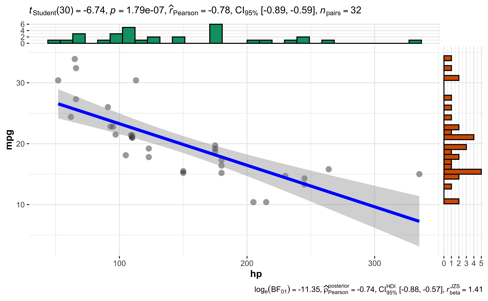

Kapitel 7 Inferenzstatistik
Kommen wir zur “Königsklasse” der Datenanalyse: Der Inferenzstatistik (?)
Generationen von Studentis haben Sie schon gehasst, sich mit ihr kritisch auseinander gesetzt,
Semester um Semester.
Wir machen da kurzen Prozess. Ein paar Minuten müssen reichen.
7.1 Die Regression als Schweizer Taschenmesser
Vielleicht hat es Ihnen Ihr Statistik-Dozenti nicht gesagt, aber: Es reicht, wenn man ein einziges Verfahren der Inferenzstatistik kann. Ja, eines. Nein, ich kann Ihnen nicht sagen, warum Sie sich dann ewig mit dem Zeugs herumschlagen mussten…
Gut, wenn Sie Statistik-Profi werden möchten, dann lohnt es sich, noch etwas breiter zu schauen, aber auch (und gerade!) unter Profis ist unstrittig, dass die Regressionsanalyse das vermutlich beste Werkzeug im Koffer ist.
Die Wahrheit ist: Sie können mit der Regressionsanalyse alle tyischen Fragestellungen beantworten. Auf t-Test, Varianzanalyse, Kovarianzanalyse, Chi-Quadrat-Test und so weiter können Sie getrost verzichten. Das sind alles Spezialfälle der Regressionsanalyse.
Also, schauen wir uns mal eine Regressionsanalyse an.
Übrigens, eine Regressionsanalyse nennt man auch lineares Modell.
7.2 Unterschied im Spritverbrauch zwischen den Getriebarten
Forschungsfrage: Unterscheiden sich die Mittelwerte des Spritverbrauchs der beiden Gruppen von Getriebart (manuelle Schaltung vs. Automatik-Schaltung)?
Das könnte man mit einem t-Test rechnen, aber die Regressionsanalyse bringt das rechnerisch exakt gleiche Ergebnis2
In R heißt der Befehl für eine Regressionsanalyse lm() (wie lineares Modell).
In unserem Fall:
lm(mpg ~ am, data = mtcars) # AV ~ UV##
## Call:
## lm(formula = mpg ~ am, data = mtcars)
##
## Coefficients:
## (Intercept) am
## 17.147 7.245Dabei ist mpg die AV (Zielvariable) und am die UV (Inputvariable), und data spezifiziert den Namen der Datentabelle.
Das Ergebnis sagt uns, dass es einen Unterschied von ca. 7,3 Meilen pro Gallone Sprit gibt (im Mittelwert) zwischen den Gruppen.
Viellicht visualisieren wir uns das schnell mal:
ggscatter(mtcars, x = "am", y = "mpg",
add = "reg.line",
conf.int = TRUE,
mean.point = TRUE,
cor.coef = TRUE)
Die Linie im Diagramm ist die Regressionslinie. Der graue Schleier das 95%-Konfidenzintervall.
Und: wir haben schon einen p-Wert, und zwar für die Korrelation (R) der beiden Größen. Das ist aber nicht der p-Wert für den Gruppenunterschied. Da stellt sich die Frage, wenn es mehrere p-Werte gibt, welche man nehmen soll. Naja, am besten den, der einem gut in den Kram passt. Oh, hab ich das gerade gesagt? Naja, so machen es jedenfalls die meisten.
7.3 Aber ich liebe den p-Wert!
Ok, ich liebe ihn nicht, aber alle Welt spricht von den p-Wert. Ohne p-Wert, habe ich schmerzlich gelernt, kann man nicht publizieren, aber mit einem schönen p-Wert, da stünde die Welt offen, hab ich gehört.
Also gut, holen wir uns den p-Wert für den Gruppenunterschied. Dafür müssen wir Folgendes tun:
lm1 <- lm(mpg ~ am, data = mtcars)
summary(lm1)##
## Call:
## lm(formula = mpg ~ am, data = mtcars)
##
## Residuals:
## Min 1Q Median 3Q Max
## -9.3923 -3.0923 -0.2974 3.2439 9.5077
##
## Coefficients:
## Estimate Std. Error t value Pr(>|t|)
## (Intercept) 17.147 1.125 15.247 1.13e-15 ***
## am 7.245 1.764 4.106 0.000285 ***
## ---
## Signif. codes: 0 '***' 0.001 '**' 0.01 '*' 0.05 '.' 0.1 ' ' 1
##
## Residual standard error: 4.902 on 30 degrees of freedom
## Multiple R-squared: 0.3598, Adjusted R-squared: 0.3385
## F-statistic: 16.86 on 1 and 30 DF, p-value: 0.000285Wir “kippen” also das Ergebnis von lm() in eine Variable mit dem Namen lm1.
Mit dem Befehl summary() spuckt uns R endlich dann mehr Details aus.
Eigentlich sogar ziemlich viele, puh.
Ganz unten in der Ausgabe steht, endlich: p-value: 0.000285.
Und dieser Wert ist kleiner als 5%, weswegen wir unser Ergebnis als signifikant adeln dürfen. Schick, nicht?!
Auf dieser Basis können wir jetzt sagen:
Das Ergebnis zeigt einen signifikanten Unterschied im mittleren Spritverbrauch zwischen den beiden Gruppen.
Wie man den p-Wert korrekt interpretiert, das sparen wir uns hier. Für die Praxis genügt es vielen (leider Gottes) zu sagen: \(p<.05\), alles paletti!
7.4 Visualisierung
Nutzen wir zur Visualisierung unseres Regressionsmodells wieder das Paket ggstatsplot:
ggcoefstats(lm1)Es gibt einen Haufen Konfigurationsmöglichkeiten für diese Funktion. Aber natürlich ist man flexibler, wenn man das Diagramm gleich selber von Grund auf erstellen würde.
7.5 Fazit
Mit gleicher Manier, d.h. via lm() können wir (fast) beliebige Forschungsfragen auf ihre Signifikanz hin untersuchen.